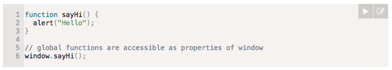
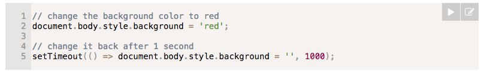
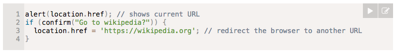

What we will cover?
- History of Javascript?
- What is JavaScript?
- Let's get our hands dirty
- jQuery
- Problem Statement
History of JS
- JavaScript, not to be confused with Java, was created in 10 days in May 1995 by Brendan Eich, then working at Netscape and now of Mozilla.
- Mocha/ LiveScript / JavaScript .
- ECMAScript is the name of the official standard, with JavaScript being the most well known of the implementations
- Over time it was clear though that Microsoft had no intention of cooperating or implementing proper JS in IE (ES4 work was mothballed)
History of JS
- Ajax whitepaper by Jesse James Garrett : 2005 -> Opensource zindabad !!
- 2008 the disparate parties on either side came together in Oslo -> ECMA 5
- ECMA 6 and 7 !!
What is Javascript ?

What is Javascript ?
- JavaScript is a programming language that allows you to implement complex things on web pages

What is Javascript ?
- HTML : We use to structure and give meaning to our web content, for example defining paragraphs, headings in the page.
- CSS : language of style rules that we use to apply styling to our HTML content, for example setting background colors and fonts.
- JavaScript is a programming language that enables you to create dynamically updating content, control multimedia, animate images, and pretty much everything else. (Okay, not everything)
Let's get dirty
- Browser environments.
- window : root object -> global object for JavaScript code -> represents the “browser window”

- DOM -> The document object gives access to the page content

Let's get dirty
- Browser environments.
- BOM -> additional objects provided by the browser (host environment) to work with everything except the document.

Events
- An event is a signal that something has happened. All DOM nodes generate such signals
- Mouse events: click | contextmenu | mouseover | mouseout | mousedown | mouseup | mousemove
- Form events: submit | focus
- Keyboard events: keydown | keyup
Events Bubbling
- Bubbling : When an event happens on an element, it first runs the handlers on it, then on its parent, then all the way up on other ancestors.
jQuery time !!
- jQuery was originally released in January 2006 at BarCamp NYC by John Resig
- jQuery simplifies the syntax for finding, selecting, and manipulating these DOM elements
Let's do everything we learnt so far with jQuery !!
- Practical time
- $(selector).find
- $(selector).children
- $(selector).siblings
- Listeners
Problem statement
- Create a webpage which includes a form. If I say my name is Aram, it should show a dancing panda
- If I say my name is Nishant, it should show a PJ
- If I say my name is Pankaj, it should show an alert saying hahaha !! and print in console "I am awesome".
- Also load the logo of argildx and when I click on it, it should shout "Hip Hip Hurray"
- People not doing assignment will treat everyone in team with something very tasty :D